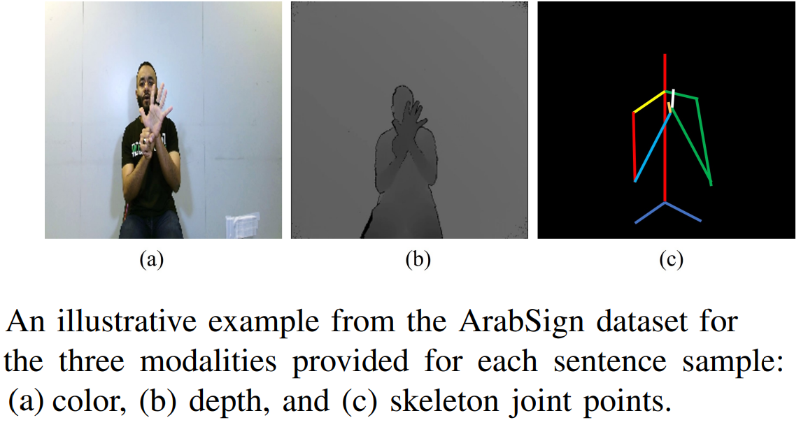

About ArabSign
ArabSign, a continuous Arabic sign language (ArSL) dataset consists of 9,335 samples representing 50 sentences of Arabic sign language. The dataset’s sentences were performed by 6 signers. Each sentence was repeated by each signer at least 30 times at different sessions. All signers are male with different skin colors. The signers’ ages range between 21 and 30 years old. All signers are right-handed, and one of them was wearing eyeglasses.
ArabSign dataset was recorded using a Kinect V2 camera that provides three types of information (color, depth, and skeleton joint points) recorded simultaneously for each sentence. In addition, we provide the annotation of the dataset according to Arabic sign language and Arabic language structures that can help in studying the linguistic characteristics of ArSL.

Dataset statistics
 The total time of the recorded sentences is around 10 hours and the average sentence's length is 3.1 signs. The dataset’s sentences consist of 155 signs, and the dataset’s vocabulary consists of 95 signs. More than 40% of the dataset signs appeared less than 5 times. Having a large number of unique signs or signs that appear a few times makes the dataset appropriate for evaluating realtime recognition systems. The total time of the recorded sentences is around 10 hours and 13 minutes. The duration of each sentence depends on its length in terms of the number of signs and the signer’s signing speed. The average sentence length is 3.1 signs. The dataset was recorded at the normal speed of signing. Each sentence was signed continuously with no pauses between sentence’s signs. This resulted in around 200,000 frames for all sentences performed by one signer, with an average of 130.3 frames per sentence.
Citation
If you use ArabSign dataset, we kindly ask you to cite ArabSign: A Multi-modality Dataset and Benchmark for Continuous Arabic Sign Language Recognition (PDF)
@INPROCEEDINGS{luqmanArabsign2023,
author={Luqman, Hamzah},
title={ArabSign: A Multi-modality Dataset and Benchmark for Continuous Arabic Sign Language Recognition},
booktitle={2023 IEEE 17th International Conference on Automatic Face and Gesture Recognition (FG)},
year={2023},
volume={},
number={},
pages={1-8},
doi={10.1109/FG57933.2023.10042720}
}
Download
The dataset is available in three modalities:
Code
To download the code that was used in the paper, please follow this link .
Contact
For more information, contact Hamzah Luqman ( hluqman@kfupm.edu.sa)